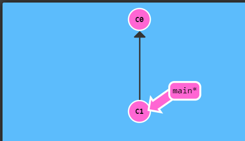
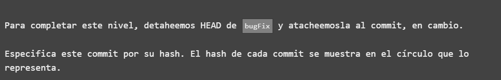
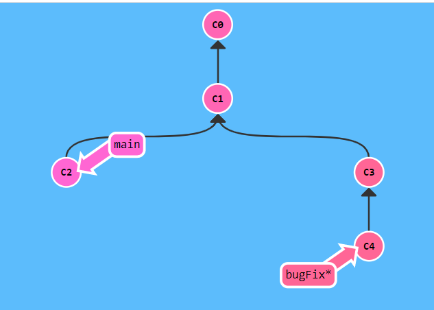
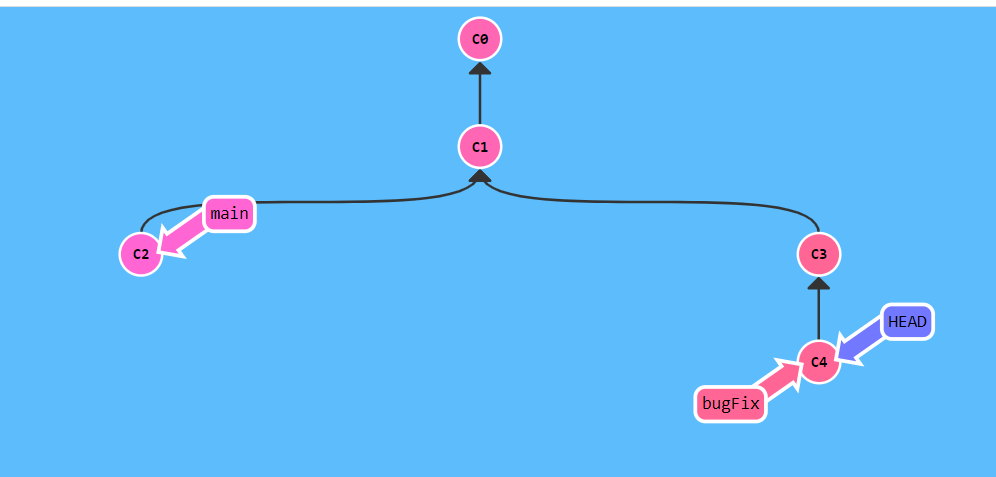
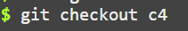

El ejercicio empieza explicándonos diciendo que HEAD suele referirse al nombre de una rama y cuando creas un commit, dicha rama se altera y ese cambio se puede ver a través del HEAD ,que es el commit sobre el que estamos trabajando en ese momento y siempre apunta al commit más reciente.
Para completar el nivel solo tenemos que "Detachear" HEAD de la rama 'bugFix' para "atachearla" al último commit. Pero, antes de completar el ejercicio tendremos que saber qué significa "Detachear"
Detachear/desajuntar HEAD significa adjuntar HEAD a un commit en vez de a una rama(branch). Antes de hacer nada se ve así:
Y despues de detachear HEAD se ve así:

Como podéis ver en la 1ª imagen no se aprecia el HEAD, eso es porque como está apuntando a la rama 'main' no es necesario que se vea, ya que el HEAD suele estar apuntando a las ramas, por lo que
se sobreentiende que la secuencia es esta: HEAD-> main->C1.
Sin embargo, en la 2ª imagen, que es cuando ya hemos detacheado('separado') HEAD de main y lo hemos atacheado('unido') a C1, vemos que HEAD apunta claramente a C1, y nos lo enseña para que no nos
confundamos y pensemos que HEAD apunta a la rama sino que, en esta ocasión, apunta al commit porque así lo hemos querido esta vez.
Aclarado una vez lo que es Detachear, pasemos a ver lo que nos pide el ejercicio:
La situación inicial es esta:
Y queremos llegar a esto:
Para llegar a la solución solo tenemos que cambiar de la rama 'main' al commit 'C1'. Para ello usamos el comando "git checkout" y el nombre de a donde queremos cambiar el HEAD:
Al escribir eso y pulsar enter nos quedaría exactamente igual que lo que nos pedían:

Esto sería todo lo que hay que saber para hacer este ejercicio y entenderlo